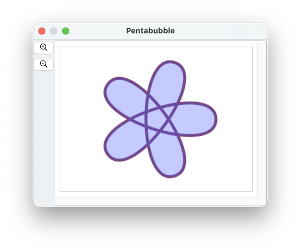

In the Pentastar Example we made five-pointed star by changing the order of the vertices of a pentagon. In this example, we'll use a similar trick, but make a shape with a path.
Here's the resulting shape:

The script to generate this shape is below. We'll walk through step by step:
First we'll start by making a regular pentagon:
tell application "SinterPixels"
set pentabubbleDoc to make new document with properties {name:"Pentabubble"}
tell pentabubbleDoc
set myPentagon to make new polygon with properties {position:{0, 0}, vertex count:5, radius:100}The five vertices of this pentagon are the same vertices we need to draw a star. Let's extract the vertices like this -- note how we change the order of the vertices at this step by going 1,3,5,2,4:
tell myPentagon
set p1 to position of vertex 1
set p2 to position of vertex 3
set p3 to position of vertex 5
set p4 to position of vertex 2
set p5 to position of vertex 4
endNow, p1 thru p5 are the five points of a star. We don't need the pentagon anymore, so let's delete it:
delete myPentagonnow, lets define the a different slope for each anchor based on the positions of the adjacent points. First, lets define a helper function, that given two points, returns a value for the slope:
to slopeFromPoints(p1, p2)
using terms from application "SinterPixels"
set dx to (x coordinate of p1) - (x coordinate of p2)
set dy to (y coordinate of p1) - (y coordinate of p2)
return {deltax:dx, deltay:dy}
end using terms from
end slopeFromPointsUsing that helper, lets define the different slopes like this:
set s1 to my slopeFromPoints(p5, p2)
set s2 to my slopeFromPoints(p1, p3)
set s3 to my slopeFromPoints(p2, p4)
set s4 to my slopeFromPoints(p3, p5)
set s5 to my slopeFromPoints(p4, p1)So, for example, the first line defines the slope for anchor 1 based on the positions of points 5 and 2. Now lets define the anchor data for each of our five anchors like this:
set a1 to {position:p1, slope:s1}
set a2 to {position:p2, slope:s2}
set a3 to {position:p3, slope:s3}
set a4 to {position:p4, slope:s4}
set a5 to {position:p5, slope:s5}And lastly, lets make a path using those five anchors. We'll use a fill color that partly transparent so it is easy to see the line of the path
set thePath to make new path with properties {anchor data:{a1, a2, a3, a4, a5}, position:{0, 0}, line width:5, color: {0.4, 0.2, 0.4}, fill color:{0.2, 0.2, 1.0, 0.3}}
end tell
end tellAnd we have our result, a path shape defined from 5 points. Here's a complete script:
to slopeFromPoints(p1, p2)
using terms from application "SinterPixels"
set dx to (x coordinate of p1) - (x coordinate of p2)
set dy to (y coordinate of p1) - (y coordinate of p2)
return {deltax:dx, deltay:dy}
end using terms from
end slopeFromPoints
tell application "SinterPixels"
set pentabubbleDoc to make new document with properties {name:"Pentabubble"}
tell pentabubbleDoc
set myPentagon to make new polygon with properties {position:{0, 0}, vertex count:5, radius:100}
set p1 to position of vertex 1 of myPentagon
set p2 to position of vertex 3 of myPentagon
set p3 to position of vertex 5 of myPentagon
set p4 to position of vertex 2 of myPentagon
set p5 to position of vertex 4 of myPentagon
delete myPentagon
set s1 to my slopeFromPoints(p5, p2)
set s2 to my slopeFromPoints(p1, p3)
set s3 to my slopeFromPoints(p2, p4)
set s4 to my slopeFromPoints(p3, p5)
set s5 to my slopeFromPoints(p4, p1)
set a1 to {position:p1, slope:s1}
set a2 to {position:p2, slope:s2}
set a3 to {position:p3, slope:s3}
set a4 to {position:p4, slope:s4}
set a5 to {position:p5, slope:s5}
set thePath to make new path with properties {anchor data:{a1, a2, a3, a4, a5}, position:{0, 0}, line width:5, color:{0.4, 0.2, 0.4}, fill color:{0.2, 0.2, 1.0, 0.3}}
end tell
end tell